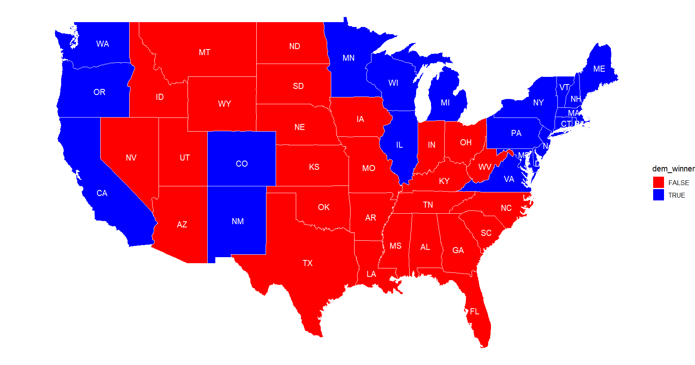

With the election just on the horizon, it’s time to create my final model, applying many different methodologies from throughout the semester. Here is the formula I used:
Model Formula:
(F_pred + P_pred)/2
where F_pred = ENET(“GDP”, “GDP_growth_quarterly”, “RDPI”, “RDPI_growth_quarterly”, “CPI”, “unemployment”, “sp500_close”, “pv2p_lag1”, “pv2p_lag2”, “incumbent_party”, “incumbent”, “deminc”, “prev_admin”, “juneapp” -> “pv2p”)
and P_pred = % WIN over 10000 simulations; simulations estimated # of likely voters for each candidate based on historical turnout + polling error
Model Description & Justification:
A common question in election prediction is between a theoretical, fundamentals-based approach or a statistical, polling-based approach. It is highly debated which is more useful or accurate in understanding and successfully predicting election outcomes. Some scholars like Allan Lichtman insist that polling is not reliable and that elections can be understood through a few key fundamental variables alone. However, other groups like 538 have achieved considerable success by aggregating voter polls in the leadup to an election. Sometimes fundamentals can be subjective in how they’re evaluated (see below), and sometimes polling can be inconsistent due to the nature of sampling and random chance. If one is skewed due to its natural variabilities, my hope is that the other would balance it out.
For the choices of fundamentals, I decided to use a set of key economic variables as well as some basic election information. I decided to keep using both GDP and RDI because the former is a tried-and-true representation of overall economic conditions while the latter may have a better chance at capturing whether people “feel the effects” of economic growth. I also used other economic indicators like the S&P 500 and unemployment.
(I considered using statewide economic variables to further specialize the models by state, but I finally decided against it because the trends in state economic performance should be somewhat comparable, and if they aren’t, it’s likely because of something voters would understand is state-specific - therefore, I doubt state economic conditions would be considered any more in vote choice than federal economic conditions, and figured I should not complicate/overfit the model since it already has many variables.)
For non-economic variables, I used the previous two presidential election results for each state in that state’s model. This allowed me to make distinct state predictions. I also used measures of incumbency and incumbent approval ratings from this past June.
As discussed in Week 4, incumbency is a strange variable this election cycle because both candidates (an incumbent vice president in the wake of the incumbent president’s dropping out, & a former, would-be non-contiguous president) have some, but not all, of the advantages of an incumbent candidate. I decided to keep with my Week 4 strategy and zero out incumbency because I figure the effect should cancel out with both of them. At the same time, I considered both to be from “previous administrations,” which should apply some weight to the incumbency effects both candidates do have.
I left out demographics from the model intentionally because of some of the issues discussed in Week 5 which showed that they do not necessarily add that much predictive power to the discussion. I considered adding in campaign spending, but we saw in Weeks 6 and 7 that it d
I aggregated all of these fundamentals using an elastic net regression with 10-fold cross-validation. This produced a median out-of-sample error of 5.415 and a median in-sample error of 1.182.
The fundamentals made up half of my results. The other half was a historical poll/error simulation, using similar methodologies to Week 7.
Based on poll data, I simulated 10,000 elections for each state by estimating turnout probabilities for Harris and Trump voters in that state respectively. This probability prediction took in historical VEP (voting eligible population) data, and predicted updates to the voting population using ordinary least squares and generalized additive model. It also used turnout data, current poll support, and previous poll standard deviations to estimate probabilities that a voter would turn out and vote Democratic, or that a voter would turn out and vote Republican. I then applied this probability to each voter from the predicted VEP and ran this simulation 10,000 times, and found the average percentages for each candidate (normalized into two-party vote share) across all of those trials.
This polling method ended up having a standard deviation of 0.06 (as the simulation is already accounting for general polling error and runs a ton of trials), but some of the races appear to be so close that they could still be within the margin of error.
As mentioned before, my weights were exactly 1/2 to the fundamentals and 1/2 to the polling simulations. I chose this approach because fundamentals and polling provide different but arguably equally important perspectives. In the end, I aimed to balance a statistical with a theoretical understanding of the variables at play and account for potential limitations of each method by balancing it out with the other.
Final predictions (+Alaska was predicted red and Hawaii was predicted blue):
 DC was not in much of the data, but it has never voted Republican and we can safely assume that its three electoral votes will be delivered to Harris. Therefore, including DC, this prediction leads to 270 electoral votes for Harris and 268 for Trump - ekeing out a narrow victory for the Democrats. However, there is plenty of error and uncertainty in this map.
This also does not include the electoral vote splits in Maine and Nebraska, but their popular vote numbers suggest that they would each lose one electoral vote to the other party, effectively canceling each other out.
In & out of sample error (as percentages):
Fundamentals error: MEDIAN Out-of-Sample FUND ERROR 5.415 MEDIAN In-Sample FUND ERROR 1.182
Polling simulation error: MEDIAN POLL In-Sample ERROR (STDEV) 0.060
Uncertainty:
The margin of error leads to lots of uncertainty amongst the data. The lead in plenty of states is within the 5% margin of error, particularly for the fundamentals side. Pennsylvania predicts Harris to win with just over 51%, which is well within the margin of error. If even that one state flips, the entire prediction of the winner would change. As is the conventional wisdom, this still appears to be a toss-up based on the data that is available to us.
However, there’s more to consider when it comes to creating a final prediction. For one, the Iowa Poll from Selzer and Co. threatens the premise of most of the existing polling out there, as it finds a lead for Harris in what was previously considered a deeply red state. Even if Harris does not win Iowa, this poll stands as a reputable outlier calling into question most of the current methodology.
The Iowa Poll differs methodologically from most of the polls out there because it adjusts for the non-response rate by sampling extremely specifically to model on the census counts for the state (https://www.youtube.com/watch?v=zguy5q1lfXc&t=370s). This could explain the variation in results and suggests that maybe other polling has not been thinking about demographics the correct way.
Overall, I hope my models strike the right balance of all the different methodologies we’ve discussed, but also recognize that there is no way to be sure until tomorrow night.
PV Predictions By State Alabama 39.61411399 60.38588601 Alaska 43.57028955 56.42971045 Arizona 48.67443229 51.32556771 Arkansas 41.48354461 58.51645539 California 59.75110694 40.24889306 Colorado 52.35567576 47.64432424 Connecticut 55.9631499 44.0368501 Delaware 57.02867473 42.97132527 Florida 48.2994772 51.7005228 Georgia 48.5810156 51.4189844 Hawaii 63.05429026 36.94570974 Idaho 32.42821253 67.57178747 Illinois 56.34125674 43.65874326 Indiana 43.23164958 56.76835042 Iowa 48.25961594 51.74038406 Kansas 41.10066015 58.89933985 Kentucky 40.15005867 59.84994133 Louisiana 42.46741525 57.53258475 Maine 54.40797201 45.59202799 Maryland 62.05607166 37.94392834 Massachusetts 62.9205428 37.0794572 Michigan 51.4844144 48.5155856 Minnesota 53.06708012 46.93291988 Mississippi 42.69563747 57.30436253 Missouri 44.34594126 55.65405874 Montana 41.52606411 58.47393589 Nebraska 39.41734071 60.58265929 Nevada 48.92735751 51.07264249 New Hampshire 52.19287019 47.80712981 New Jersey 54.45955872 45.54044128 New Mexico 53.15107449 46.84892551 New York 59.21663221 40.78336779 North Carolina 47.92198243 52.07801757 North Dakota 36.20520155 63.79479845 Ohio 47.40090533 52.59909467 Oklahoma 34.92575916 65.07424084 Oregon 55.0497528 44.9502472 Pennsylvania 51.16908766 48.83091234 Rhode Island 60.59303962 39.40696038 South Carolina 45.02654041 54.97345959 South Dakota 39.20633606 60.79366394 Tennessee 42.78645786 57.21354214 Texas 45.05545326 54.94454674 Utah 36.86115721 63.13884279 Vermont 64.03980721 35.96019279 Virginia 51.36166411 48.63833589 Washington 56.92694201 43.07305799 West Virginia 38.12376756 61.87623244 Wisconsin 51.26507606 48.73492394 Wyoming 28.59618423 71.40381577